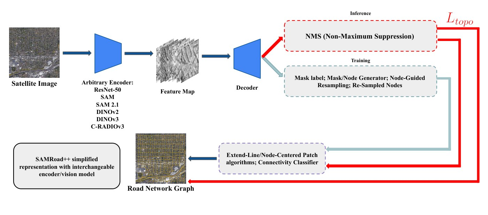
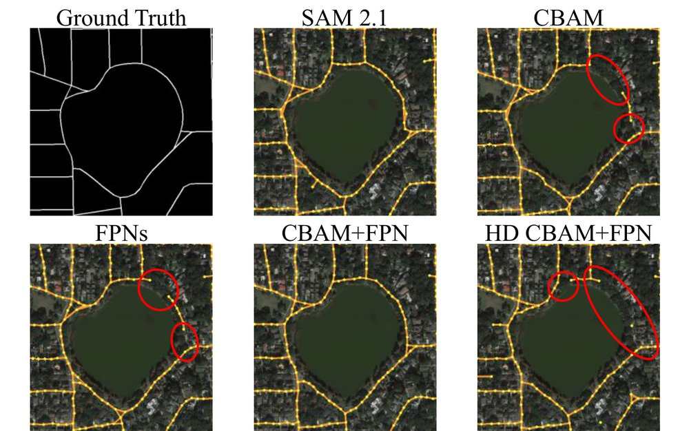

Motivation
Road-network graphs extracted from satellite imagery feed autonomous navigation, urban planning, and disaster response. Getting the pixels right isn't enough: a single missed segment under a tree or overpass breaks every route that passes through it. Foundation models such as SAM, DINO, and RADIO have transformed pixel-level segmentation, but it was unclear which of their representational properties transfer to graph-level topology, where long-range connectivity matters as much as detection.
Approach: a controlled swap
To isolate the effect of the representation, the encoder is the only thing that changes. Everything downstream (decoder, topology reasoning, training recipe, thresholds) is held fixed.
- Backbones: ResNet-50 (supervised baseline), SAM, SAM 2.1, DINOv2, DINOv3, and C-RADIOv3
- Two extraction paradigms: a sparse point-proposal pipeline (SAMRoad++) and a dense graph-tensor-encoding pipeline (Sat2Graph-style)
- Architectural add-ons: Feature Pyramid Networks and CBAM attention, alone and combined
- Data: CityScale (20 U.S. cities), plus GlobalScale (3,338 tiles worldwide) with an out-of-domain split of entirely unseen geographies
- Metrics: TOPO precision/recall/F1, and APLS (Average Path Length Similarity) as the primary metric, since it directly measures routing fidelity

Findings
- The backbone matters more than the architecture. Encoder choice moved graph connectivity far more than any decoder modification. SAM 2.1 gave the highest APLS, mainly by recovering roads the other encoders missed (higher recall).
- Extra decoder complexity didn't help. FPNs, attention, and their combination all lowered APLS when added to SAM 2.1.
- Foundation models generalize; supervised features don't. On unseen geographies the ResNet-50 baseline stays precise but its recall collapses, missing most of the network. Every foundation model held up far better.
The results are consistent with a simple hypothesis: pretraining objectives that emphasize spatial boundary localization (as in SAM 2.1) transfer better to topological routing than purely semantic or multi-teacher distilled objectives.


My role
- Led the study as first author: experimental design, every backbone and augmentation experiment, and the write-up
- Built the controlled evaluation pipeline on an NVIDIA RTX PRO 6000 GPU that isolates encoder features from the rest of the system
- Ran the cross-domain generalization study across 3,300+ globally distributed satellite tiles